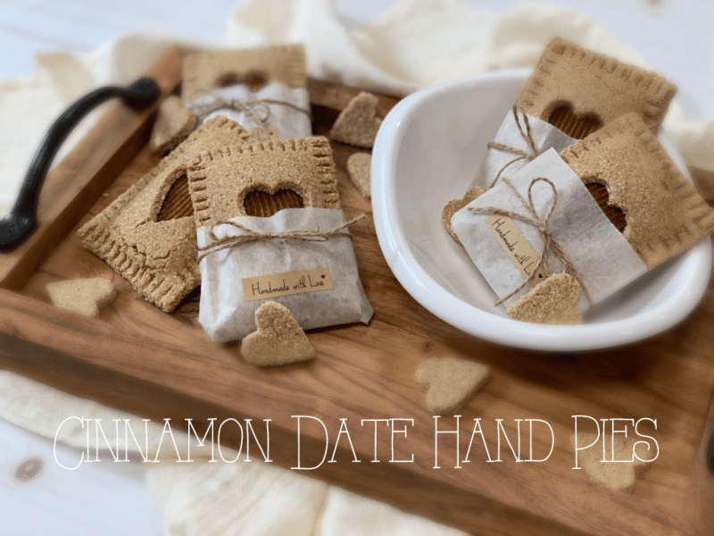
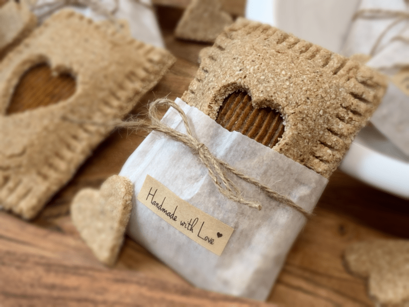
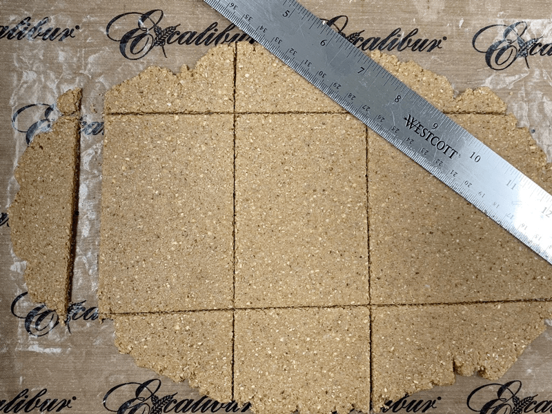
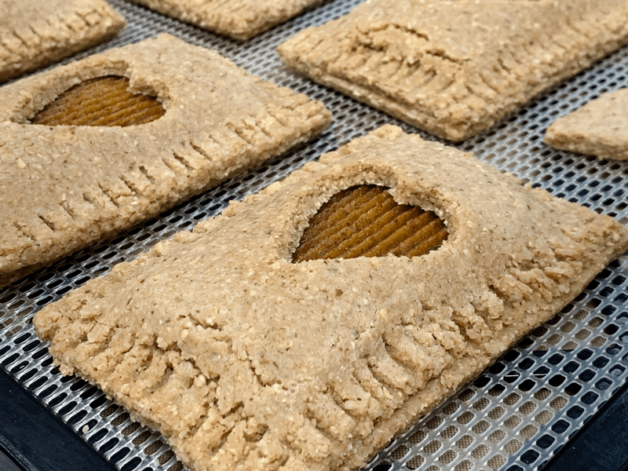

Cinnamon Date Hand Pies
Falling in love is one of the greatest feelings in life. It’s full of wonder, excitement, joy, and tingles. Love makes you happy, hopeful, grateful, inspired, and frankly, it just changes your life. Bob coming into my life did this for me and not that I wish to compare my husband to hand pies… so did this recipe. But in all seriousness, love is a grand thing to have in your life, and if you don’t have love, manifest it! Whether it is romantic love, neighborly love, self-love, or genuine love for life, we all need IT to survive.

These Cinnamon Date Hand Pies, on the other hand, are not needed to survive life, BUT they will significantly enhance it. When I set out to create these slightly sweet mini pies, my goal was to create them with minimal ingredients, make them nut-free, dry to the touch, and sturdy. I wanted them to be able to travel well and be nutritious and downright delicious. According to my taste buds and my taste testers, I did just that.

The fun part (well I find it fun) is that you can make these hand pies any size and shape that you want. You can use different shaped cookie cutters for the center decor or omit that step altogether. You can also replace the sweet center with a puree of any dried fruit or a thick jam. I used nothing but pure Medjool dates, processing them to a creamy caramel tasting center filling.
Let’s Talk Taste & Texture
These hand pies are not overly sweet, which makes them great for breakfast or a midday treat. It’s perfect when you crave something slightly sweet but want to keep it healthy. The spices that I chose for the pastry crust are nice and delicate, meaning, none of them are overpowering in trying to call attention to themselves. I instructed the spices to came together to work as a team.
For the texture, my goal was to create a satisfying, wholesome hand pie that could withstand being held without crumbling to the floor, and dry to the touch, so they didn’t leave you with sticky fingers as you ate them on the go. I also removed most of the moisture so they would keep fresh longer. Now, that’s not to say that you can’t achieve a moist crust if desired. If that is the case, remove them from the dehydrator when they hit the right level of doneness for you. When it comes to raw recipes, we never have to worry about undercooking or burning our foods; we have the ultimate control in creating the perfect texture to your liking.
I hope you enjoy this recipe. Please leave a comment below! Have a blessed day, amie sue
 Ingredients
Ingredients
Yields: 7 hand pies
Hand Pie Crust
- 2 cups (180 g) shredded, dried, unsweetened coconut
- 1 1/2 cups (155 g) rolled, gluten-free oats, soaked & dehydrated
- 1 Tbsp (8 g) brown flaxseeds, ground
- 2 tsp (5 g) Ceylon ground cinnamon
- 1/2 tsp (2 g) ground nutmeg
- 1/2 tsp (2 g) ground ginger
- 1/2 tsp (4 g) sea salt
- 1/4 cup (80 g) maple syrup
- 1/4 cup (60 g) water
Center Filling
Preparation
- In the food processor, fitted with the “S” blade, process the coconut, oats, ground flaxseeds, cinnamon, nutmeg, ginger, and salt.
- Process until it reaches a fine flour, and all the spices are equally dispersed.
- Add the maple syrup and water. Process the batter until it turns into a paste-like texture. If it feels too dry, add 1-2 Tbsp of water.
- Place the dough in the center of parchment paper, or you can use the non-stick sheet that comes with the dehydrator.
- Cover with plastic wrap and roll the batter out to roughly 1/4″ thickness.
- As far as how big or small they are is up to you. My pies were 4″ x 2.75″ when I measured them.
- You will need two sheets of dough per hand pie. On the bottom sheet, pipe or spread out the date paste. Leave a border around the edge so you can press the two dough pieces together. I used (this) piping tip.
- Lay the second piece on top and crimp the edges together with a damp fork.
- Gently lift and place it on the mesh of the dehydrator tray.
- Dehydrate at 145 degrees (F) for 1 hour, then reduce to 115 degrees (F) and dry for another 6-10 hours.
- You can stop the drying process at any time, depending on how moist or dry you want them to be.
- Store in an airtight container for five to seven days for ultimate freshness.


© AmieSue.com